프롬프트 한 문장이 X 피드를 채웠어요
이 영상의 첫 장면부터 Claude가 만든 결과물이에요. 이야기, 애니메이션, 음악, 효과음 375개까지 전부 Claude가 만들었고, After Effects나 Suno, 스톡 음원 사이트는 쓰지 않았다고 해요. 들어간 돈은 원래 내던 Claude 구독료뿐이에요.
발표자는 같은 주제로 영상을 세 개 만들고 그 사이에 무엇이 달라졌는지 보여 줘요. 아래 목록이 영상 전체의 순서예요. 짧은 프롬프트 하나, 음악과 효과음 추가, 이야기 추가, 그리고 셋의 차이예요.
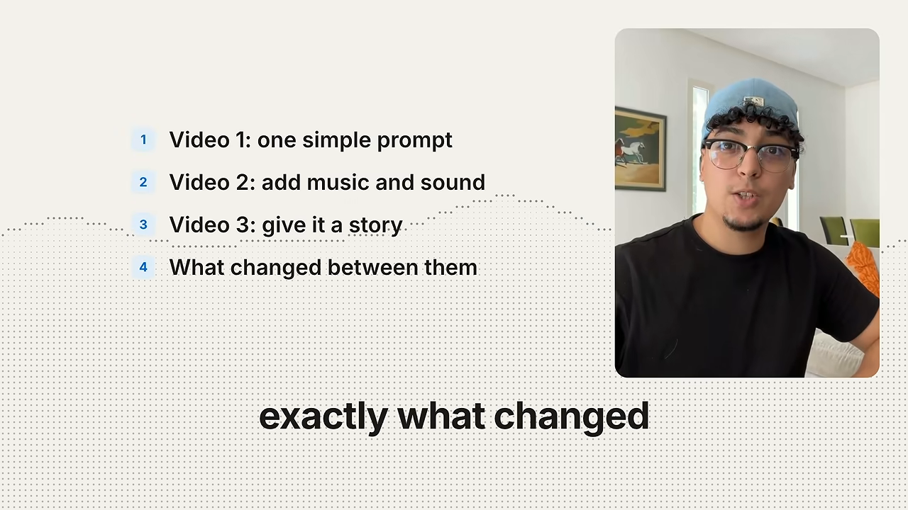
X 피드를 채운 사례들
9월 22일 Anthropic이 Opus 5.5를 내놓자 며칠 만에 발표자의 X 피드가 모션 그래픽으로 가득 찼어요. 첫 사례는 Stephan Livera의 게시물이에요. 노란색으로 칠한 부분이 프롬프트 전부예요. "네가 얼마나 대단한 모션 디자이너인지 보여 주는 15초짜리 모션 그래픽을 만들어. 이력서에 붙일 쇼릴처럼." 발표자는 이 게시물이 220만 조회수를 기록했다고 말해요.
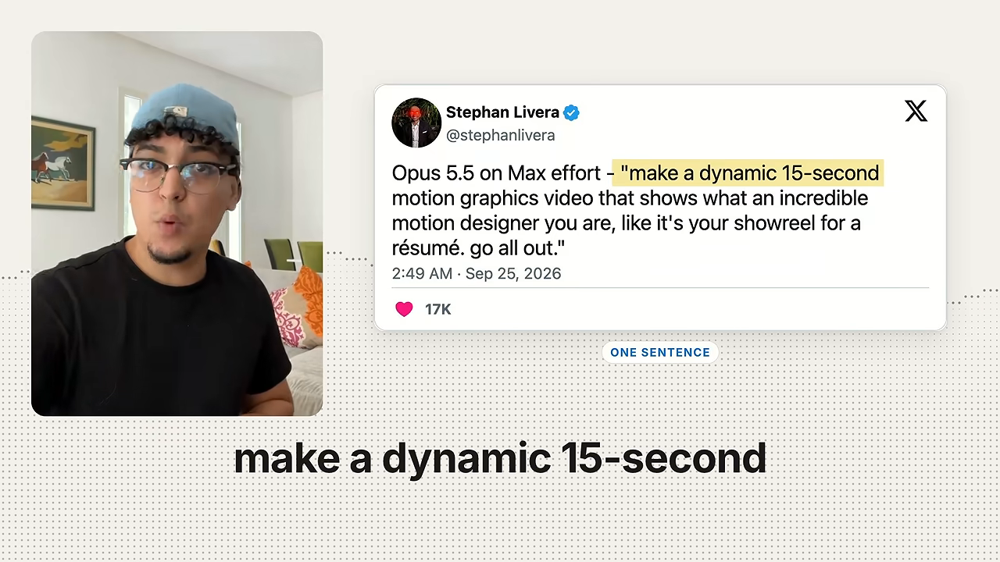
두 번째는 Tony Dinh의 게시물이에요. 노란색 부분 'less than 30 minutes'가 핵심이에요. 1년 전에는 비슷한 영상에 1,000달러 넘게 냈는데, 이번에는 Opus 5.5로 30분도 안 걸렸다는 거예요.
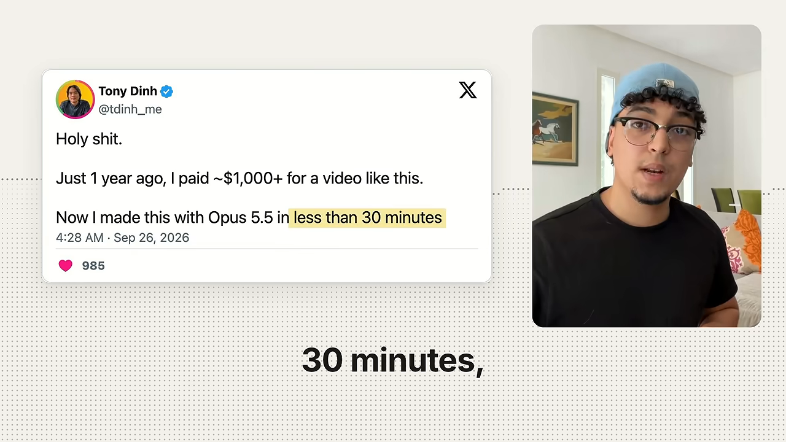
가장 화제가 된 건 donald의 영상이에요. 게시물의 노란 줄이 요점이에요. 컴퓨터에 5분 동안 말하고 잠들었는데, Claude가 12시간 일해서 영상을 만들어 놨다는 거예요. 위쪽 첫 줄에는 '프롬프트 하나로 만들었다'고 적혀 있어요. 이 말이 다음 절의 질문으로 이어져요.
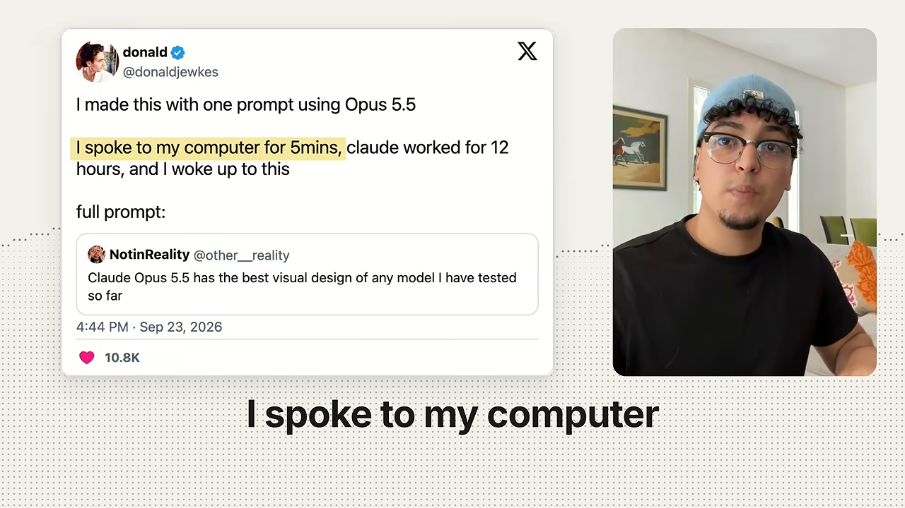
결과물은 AI(Artificial Intelligence) 특이점을 주제로 한 팝송 뮤직비디오예요. 아래 장면은 손그림 같은 해바라기 옆에 'upping my p(doom)'이라는 가사와 '2019, 시간 지평 약 6초'라는 숫자를 띄워요. 오른쪽 위 라벨대로 이 영상은 390만 조회수를 넘겼어요.
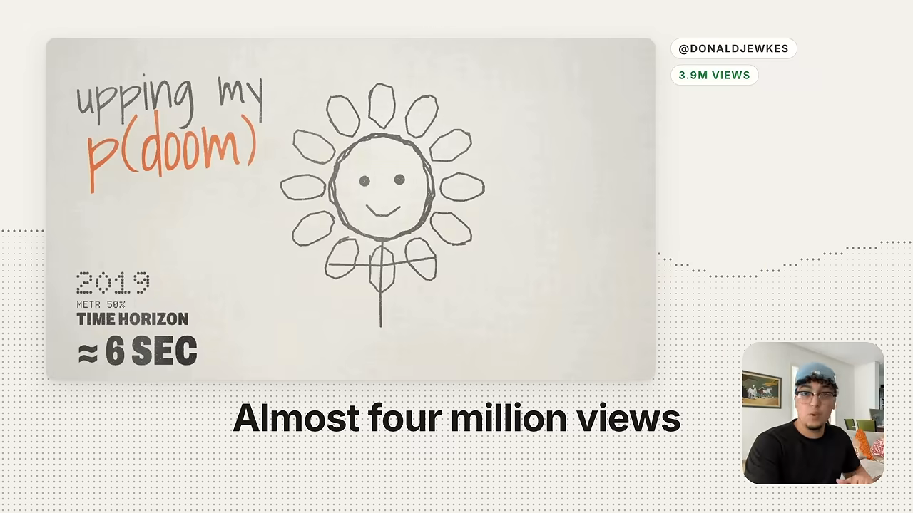
정말 프롬프트 하나였을까요?
게시물마다 '원샷'이라고 쓰니 다들 따라 해 봤어요. 결과는 기대에 못 미쳤어요. Rexan Wong의 게시물에서 노란색 부분이 그 솔직한 고백이에요. "다들 프롬프트 하나로 만들었다는데, 내 프롬프트 하나짜리 영상은 별로였다." 그래서 그는 이런 영상들이 실제로 어떻게 만들어졌는지 직접 파고들었어요.
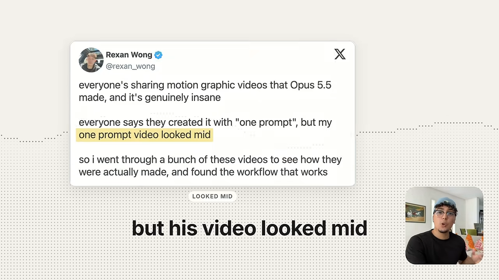
답은 Anthropic에서 Claude Code를 만드는 Thariq이 짧게 줬어요. 위 줄은 '게시물: Claude가 한 번에 만들었다', 아래 줄은 '프롬프트: 좋은 관점을 담은 1만 자에 스킬, 예시, API(Application Programming Interface) 키까지'예요. 그 아래에 donald가 MP4 파일과 원본 링크까지 넘겼다는 답글이 인용돼 있어요.
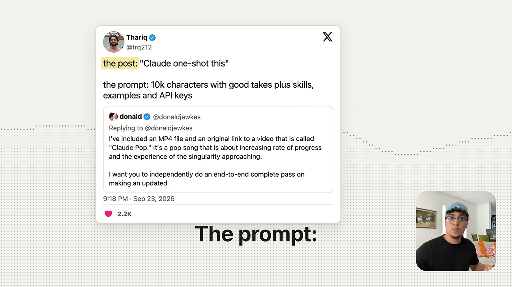
발표자에게 가장 남은 건 Movez의 글이에요. 조회수 170만의 이 글은 세 문단이에요. 첫 문단은 대부분의 사람이 '그라데이션 위 가운데 글자, 전부 페이드 인, 끝에 로고'라는 똑같은 영상을 얻는다고 해요. 둘째 문단은 그 이유로 참고 자료도, 렌더 엔진도 주지 않고, 자기 프레임을 보게 하지도 않는다는 점을 들어요. 마지막 문단이 이 영상 전체의 주제예요.
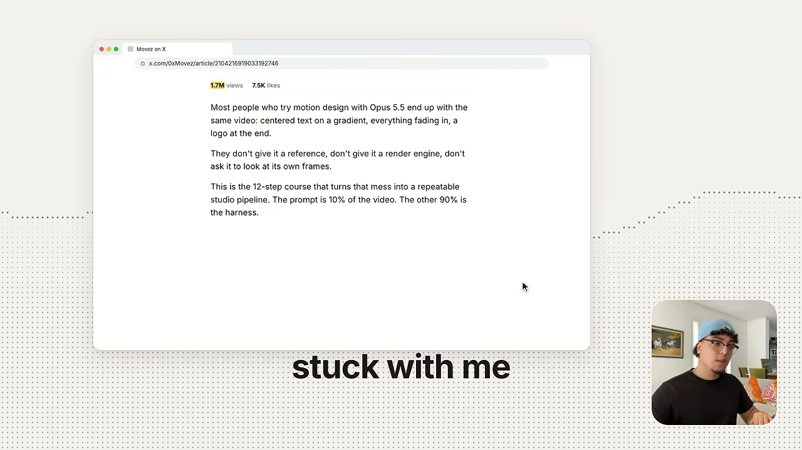
The prompt is 10% of the video. The other 90% is the harness.
프롬프트는 영상의 10%예요. 나머지 90%는 하네스예요.
— Movez의 글 (영상 05:48 부근)
그래서 발표자는 같은 지식을 Claude에게 먹이고 영상 세 개로 실험했어요. 아래 막대가 세 프롬프트의 글자 수예요. 영상 1은 1,397자로 짧고, 영상 2는 8,137자, 영상 3은 9,664자로 Thariq이 말한 1만 자에 가까워요.
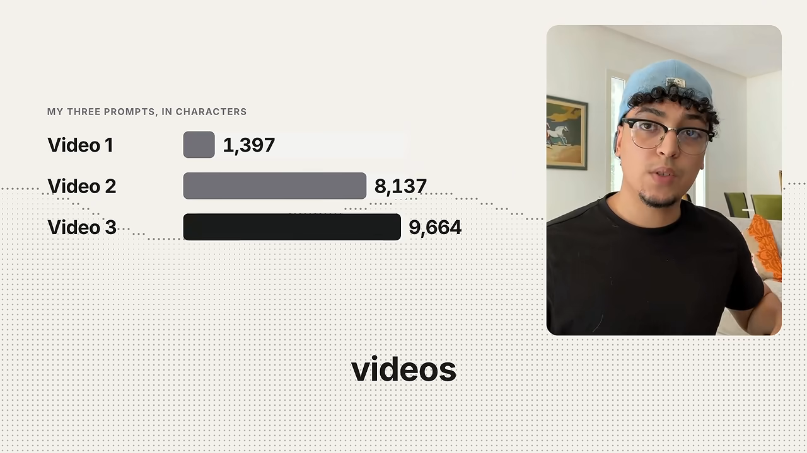
글만 쓰는 Claude가 영상을 만드는 법
많은 사람이 놓치는 점이 있어요. Claude는 영상을 만들지 못해요. MP4를 출력할 수 없고 글만 써요. 그래서 영상 대신 코드를 써요.
아래 화면 한 장에 과정이 다 들어 있어요. 왼쪽 위는 Claude가 쓴 index.html이에요. 색 변수와 GSAP(GreenSock Animation Platform) 타임라인으로 매 순간 화면이 어떻게 보여야 하는지 정해 둬요. 오른쪽 위는 '헤드리스 Chrome'이라는 라벨이 붙은 브라우저가 그 페이지를 한 프레임씩 띄운 모습이에요. 가운데 '16 s × 60 fps = 960 screenshots'는 16초 영상이면 스크린숏 960장이 필요하다는 계산이에요. 맨 아래는 ffmpeg 명령이 frames/0001.png부터 0960.png까지 이어 붙여 1920×1080, 60fps, 16초짜리 MP4를 만드는 장면이에요.
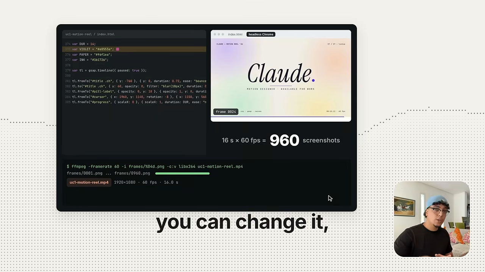
ffmpeg -framerate 60 -i frames/%04d.png -c:v libx264 uc1-motion-reel.mp4코드라서 고치기 쉬운 것도 장점이에요. 색이 마음에 안 들면 그 한 줄만 바꾸고 다시 렌더링하면 돼요. 화면 속 코드에서 노란 줄로 강조된 VIOLET 변수가 그런 예예요.
발표자는 여기에 오픈소스 프레임워크 HyperFrames를 썼어요. 아래 화면의 두 줄이 이유예요. 프레임워크가 없으면 Claude는 매번 처음부터 만들고, 프레임워크가 있으면 이미 돌아가는 구조에서 시작해요.
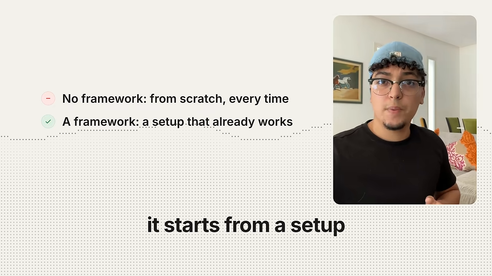
영상 1: 짧은 프롬프트 하나
첫 영상은 앞에서 본 유명한 '쇼릴' 문장으로 시작해요. 아래 화면에서 노란색 부분이 그 문장이에요. 발표자는 여기에 겉모습 지시 몇 줄을 더했어요. 음악은 없이 움직임만으로 리듬을 만들 것, 라일락·피치·민트 파스텔에 따뜻한 종이 질감, 제목은 Instrument Serif 이탤릭, 작은 라벨은 JetBrains Mono, 강조색은 전기 보라 하나예요. 둘째 문단은 보라색 도형 하나가 끊기지 않고 모양을 바꿔 가는 장면 순서이고, 셋째 문단은 HyperFrames로 1920×1080, 60fps로 렌더링하라는 지시예요.
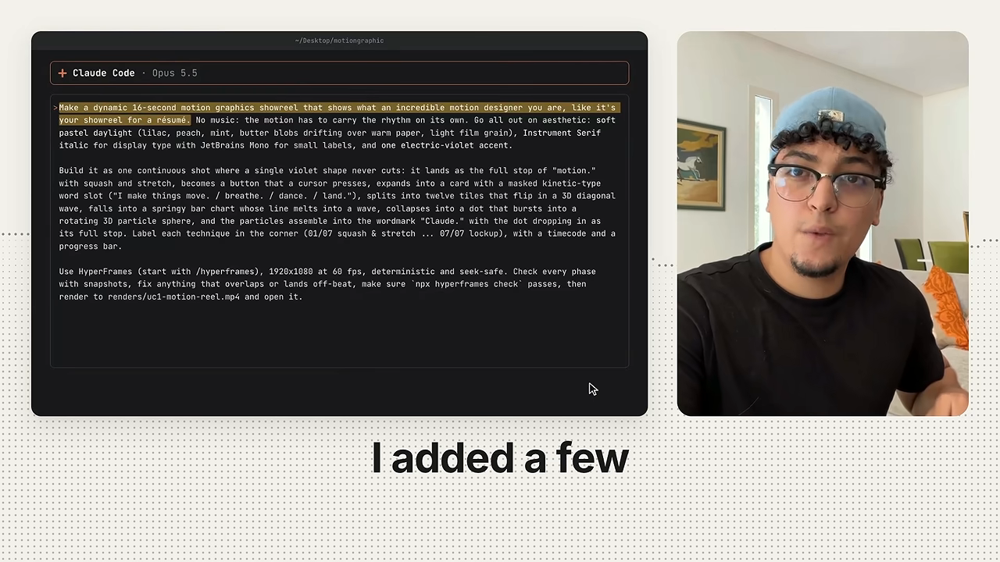
결과는 16초, 60fps에 기법 일곱 가지를 쓴 영상이에요. 아래 컨택트 시트는 영상의 장면을 한 장에 모은 거예요. 'motion.' 글자, 'I make things move.' 카드, 열두 칸 타일, 막대 그래프, 마지막 'Claude.' 로고까지 보여요. 진짜 쇼릴처럼 장면마다 구석에 기법 이름이 붙어 있어요.
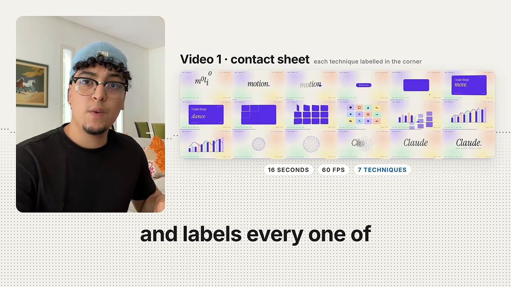
문제는 두 가지예요. 하나는 수백 명이 같은 문장을 써서 결과가 다 비슷해 보인다는 점이에요. 아래 화면 왼쪽은 Stephan Livera의 결과, 오른쪽은 발표자의 영상 1인데, 둘 다 보라색 카드와 굵은 글자로 된 같은 계열이에요. 아래 라벨이 'THE EXACT SAME SENTENCE'예요.
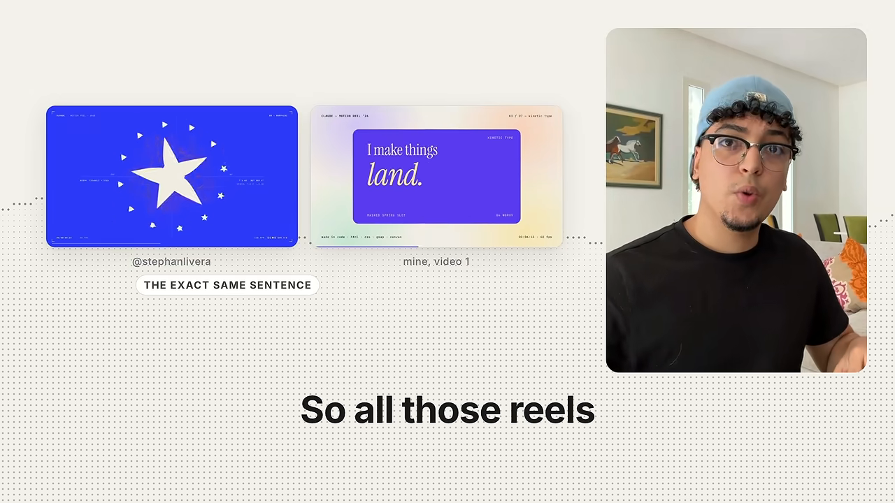
다른 하나는 소리가 없고, 담긴 생각도 없다는 점이에요. 프롬프트에 생각이 없었으니 영상에도 없는 거예요. 영상 2와 3은 이 두 빈자리를 채워요.
영상 2: 음악과 효과음까지 0원으로
발표자는 소리 없는 모션 그래픽이 파워포인트처럼 느껴진다고 말해요. 소리가 들어가야 진짜 영상처럼 느껴지기 시작해요.
유료 도구 세 개 대신 노트북 하나
보통은 음악에 Suno, 목소리에 ElevenLabs, 효과음에 스톡 사이트를 써요. 아래 화면의 세 장이 그 셋이고, 그 아래 라벨이 과금 방식이에요. 곡마다, 글자마다, 다운로드마다 돈을 내요. 구독 세 개에 API 키 세 개가 필요해요.
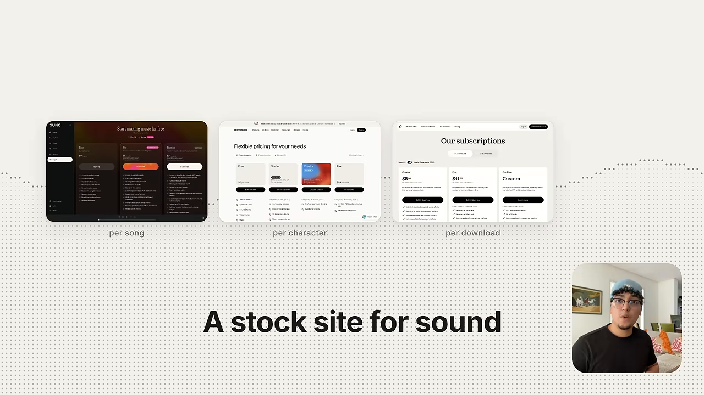
발표자는 대신 ACE-Step 1.5라는 음악 모델을 찾았어요. 아래 화면은 그 GitHub 저장소이고, 아래쪽에 'FREE' 라벨이 붙어 있어요. 무료이고 오픈소스이며 노트북에서 돌아가요. 발표자의 노트북은 RAM(Random Access Memory) 16GB짜리 MacBook Air로, 고성능 장비가 아니에요.
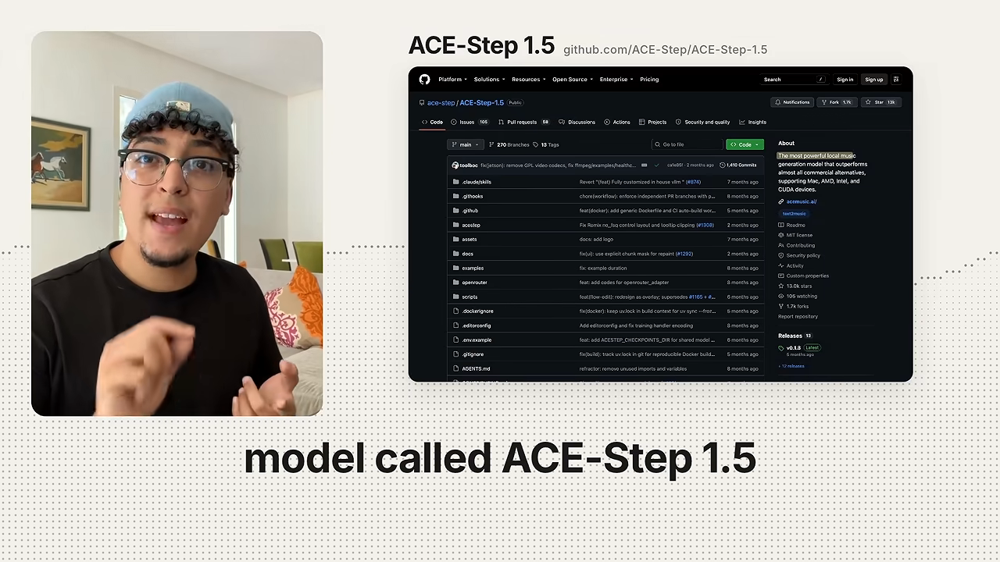
Claude에게 맡긴 역할
영상 2의 프롬프트는 8,137자예요. 첫 줄에서 Claude에게 감독, 작사가, 애니메이터, 사운드 디자이너, 렌더 엔지니어 역할을 줘요. 'THE FILM IN ONE LINE' 아래에는 단어 하나하나가 보컬에 맞춰 들어가는 30~40초짜리 가사 영상을, 'THE SONG' 아래에는 AI로 모션 그래픽을 만드는 내용의 128~150 BPM(Beats Per Minute) 노래를 요청해요. 맨 아래 'MUSIC - 100% FREE AND LOCAL'에는 이미 설치된 ACE-Step 1.5의 경로를 적고 다른 모델은 내려받지 말라고 해요.
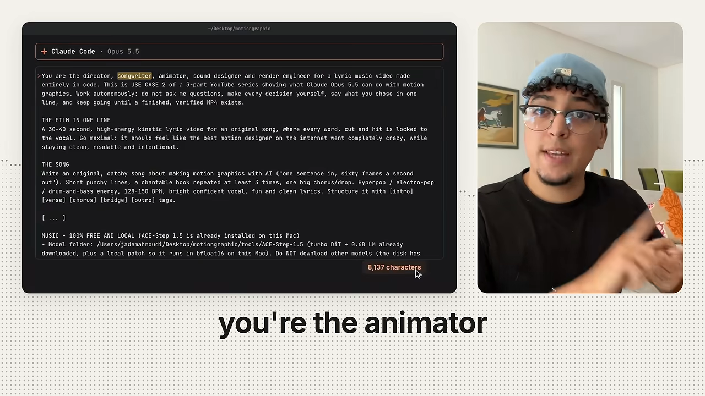
Claude는 이 일을 혼자 다 했어요. 가사와 훅을 쓰고, 노래를 12개 버전으로 만든 뒤 하나씩 들어 보며 골랐어요. 아래 장면이 완성된 영상의 제목 'SIXTY FRAMES OUT'이에요. 분홍빛 크롬 질감의 3D 글자가 무대 위에 서 있어요.
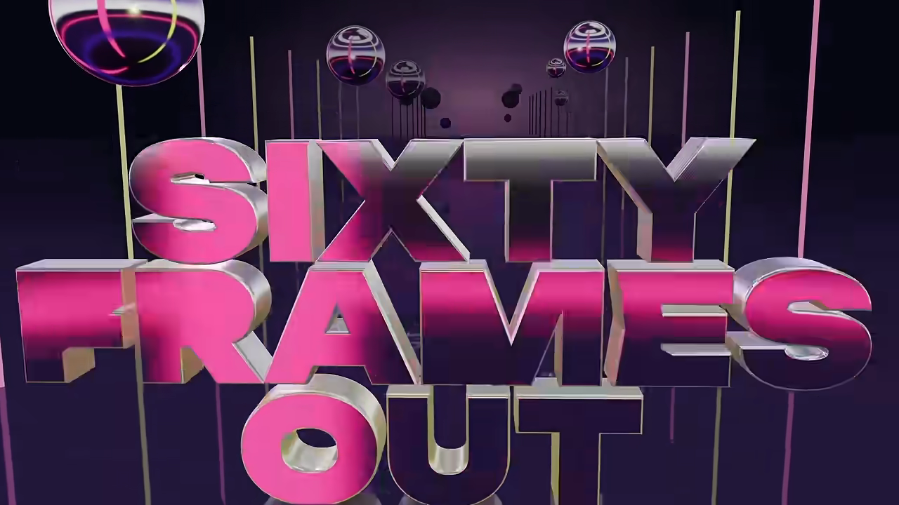
가사 맞추기와 코드로 만든 효과음
재미있는 일화가 하나 있어요. 아래 세 칸을 위에서부터 읽으면 돼요. 첫 칸은 노래를 받아 적은 결과 'Something else should insert'예요. 둘째 칸이 실제 가사 'Type it out, hit enter'예요. 보컬을 많이 가공해서 받아 적기가 틀린 거예요. 셋째 칸처럼 음절 수와 시작 박자가 같아서 Claude는 순서대로 맞춰 붙였어요.
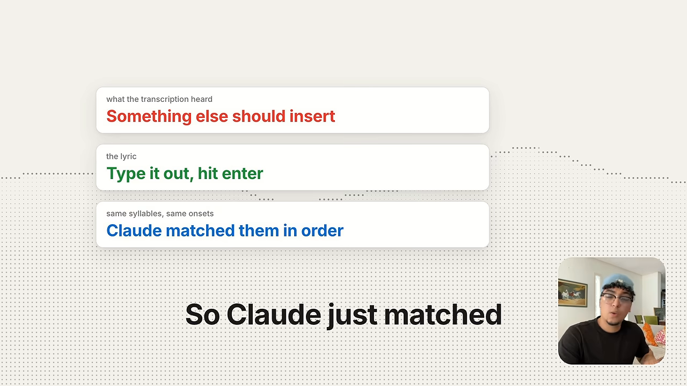
효과음은 하나도 내려받지 않았어요. 아래는 Claude가 쓴 make_sfx.py예요. 노란색으로 칠한 함수 이름이 효과음 종류예요. whoosh는 주파수를 300에서 5,000까지 올리는 휙 소리, impact는 빠르게 줄어드는 쿵 소리, riser는 드롭 직전에 점점 올라가는 소리, sparkle은 높은 주파수를 무작위로 뿌린 반짝이는 소리예요. 발표자 말대로 '휙 소리처럼 들리는 수학'이에요.
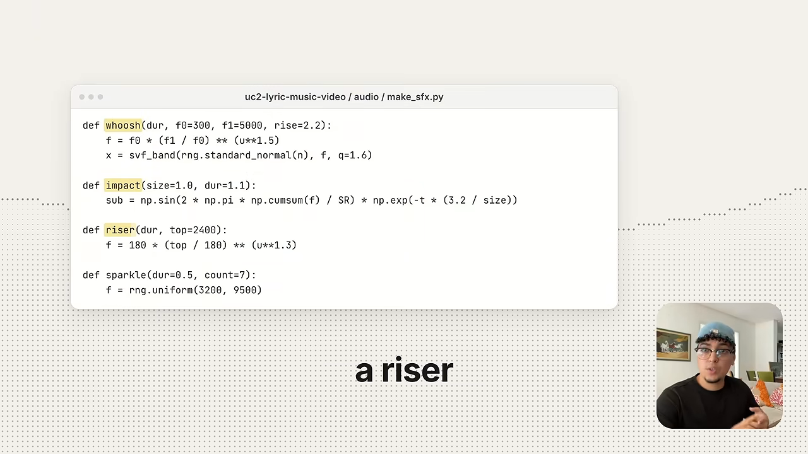
기본값을 금지하기
발표자가 꼽은 요령은 쓰면 안 되는 것을 정확히 알려 주는 거예요. 아래 프롬프트 조각의 첫 줄은 '다른 영상과 달라 보여야 한다'예요. 다른 데모에서 이미 쓴 크림·주홍·코발트·노랑 팔레트와 Archivo Black + JetBrains Mono 글꼴, 영상 1의 파스텔과 Instrument Serif 이탤릭을 하나하나 적고, 마지막 줄에서 그 어떤 모습이나 기법도 다시 쓰지 말라고 해요.
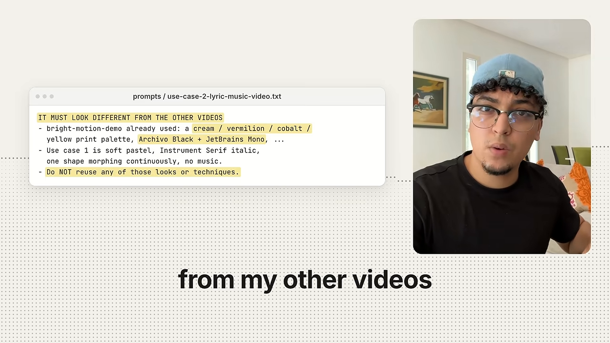
기본값을 막지 않으면 어떻게 되는지는 Rexan Wong이 정리했어요. 노란 줄이 그 모습이에요. 참고 자료가 없으면 Opus는 가운데 글자, 그라데이션 배경, 전부 페이드 인하는 기본 모습으로 돌아가요. 그래서 이런 영상이 다 비슷해 보인다는 거예요.
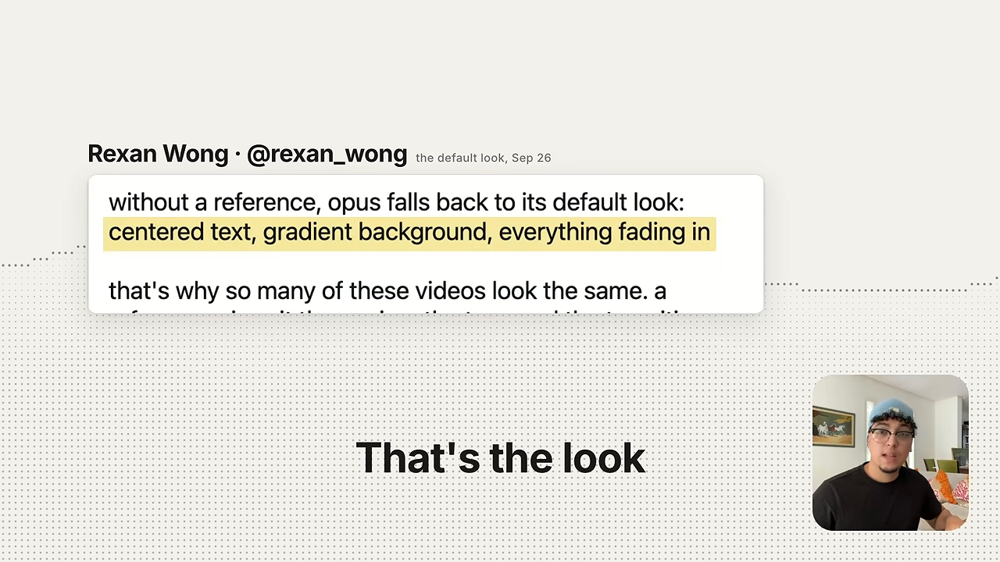
영상 2에도 든 돈은 원래 내던 Claude 구독료뿐이에요.
영상 3: 작업 대신 제작진과 이야기를
영상 1과 2에서는 Claude에게 작업을 줬어요. 영상 3에서는 제작진을 줬어요. 아래 프롬프트의 첫 줄에서 노란색으로 칠한 여섯 단어가 그 역할이에요. 감독, 작가, 애니메이터, 작곡가, 사운드 디자이너, 렌더 엔지니어예요.
영상을 묘사하는 대신 이야기를 줬어요. 'THE FILM IN ONE LINE'에 적힌 제목은 'One Conversation'이에요. 새벽 2시 7분, 큰 아이디어는 있지만 팀이 없는 창작자가 한 문장을 입력하자 대화 안에서 영화 스튜디오 전체가 깨어난다는 줄거리예요. 길이는 60~75초이고, 그 아래에는 장면별 줄거리 표(beat sheet)가 이어져요.
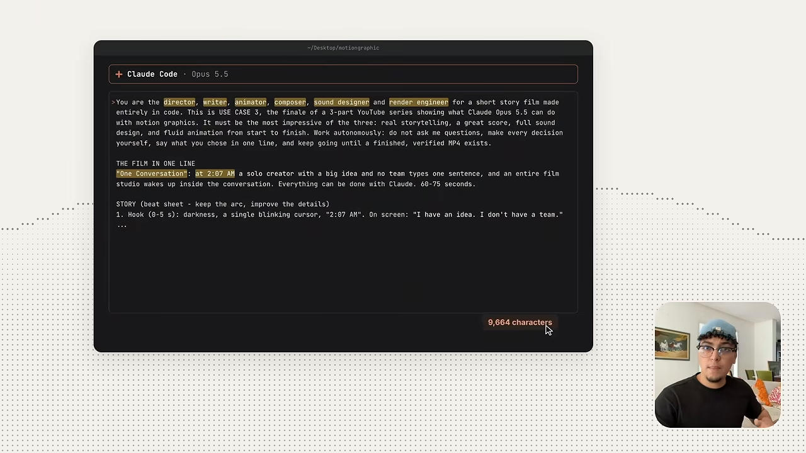
완성된 영상은 제작진이 한 명씩 등장하는 구성이에요. 화면 오른쪽 위 'ROLES 3 / 7'이 일곱 역할 중 세 번째라는 뜻이에요. 아래는 애니메이터 차례예요. back.out(1.7)이라는 이징 곡선과 아래 타임라인의 키프레임 마름모가 보이고, 왼쪽 아래에는 '키프레임 214개를 움직이는 중'이라고 적혀 있어요. 맨 아래 줄에 적힌 작가, 미술, 애니메이션, 음악, 소리, 편집, 렌더가 일곱 역할이에요.
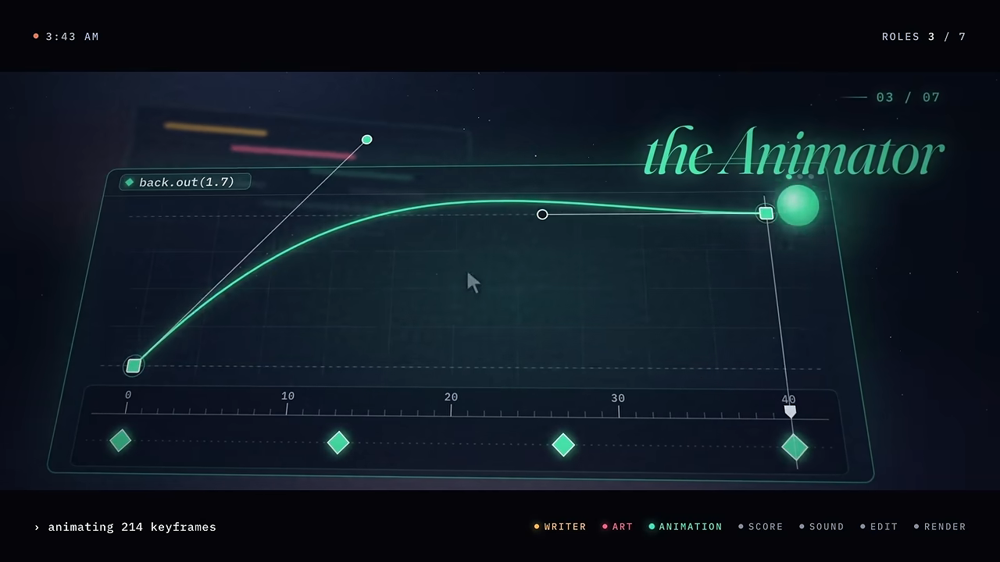
마지막 역할은 렌더예요. 아래 화면 가운데에 지금까지의 장면이 격자로 깔리고, 'FRAME 1176 / 2055'와 57% 진행 막대가 보여요. 1920×1080, 30fps, 68.5초 영상이라 프레임이 2,055장이에요. 앞에서 본 '프레임마다 스크린숏을 찍어 이어 붙이는' 과정을 이야기 속 장면으로 바꾼 거예요.
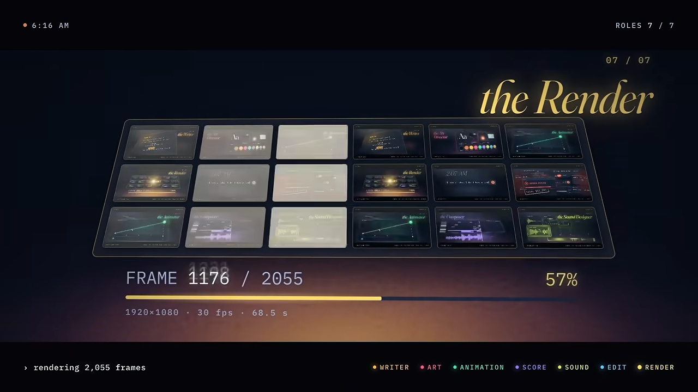
스스로 보고 고치는 비평 루프
발표자가 가장 큰 차이를 본 건 여기예요. Claude는 이미지를 볼 수 있어서, 라운드마다 자기가 만든 걸 직접 봐요. 아래 화면이 그 컨택트 시트예요. 샷마다 한가운데 순간을 스크린숏으로 찍어 한 페이지에 모은 거예요. 2:07 AM, the Writer, the Animator, the Composer, the Sound Designer, the Editor, the Render, One Conversation 장면이 한눈에 보여요.
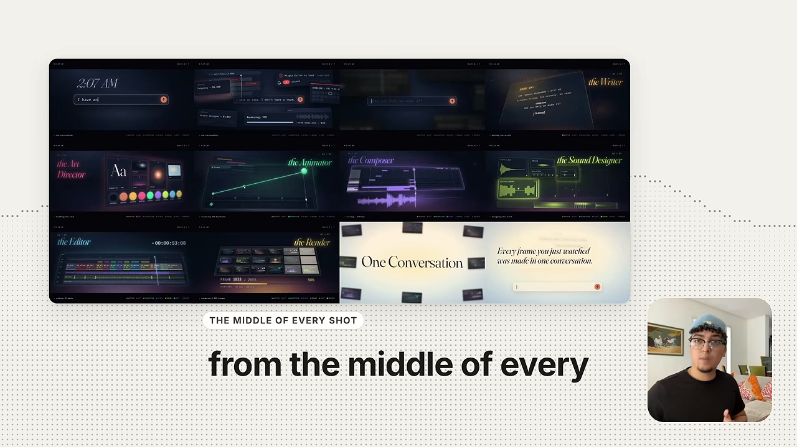
프롬프트에는 이 루프가 한 단락으로 들어 있어요. 노란색 부분이 채점 기준이에요. 샷마다 이야기 전달, 구도, 움직임의 매끄러움, 글자, 음악·소리와의 싱크, 완성도를 1~10점으로 매겨요. 발표자는 말로 다섯 가지를 꼽았지만 화면의 프롬프트에는 '완성도(polish)'까지 여섯 가지가 적혀 있어요.
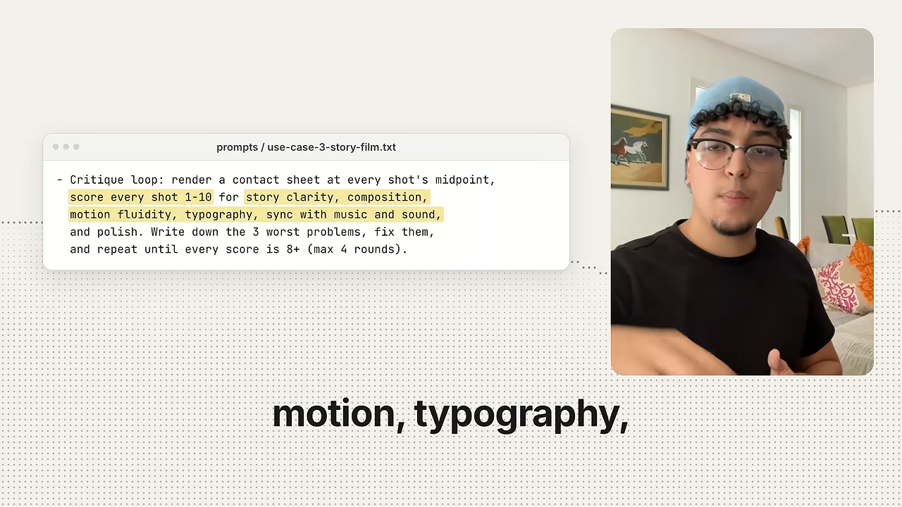
화면 두 장에 나뉜 루프를 한 그림으로 모으면 이래요.
flowchart LR A["렌더링"] --> B["샷마다 가운데 장면으로
컨택트 시트 만들기"] B --> C["샷별로 1~10점 채점"] C --> D{"모든 샷이
8점 이상?"} D -- "아니요" --> E["가장 나쁜 문제
3개 적기"] E --> F["고치기"] F --> A D -- "예" --> G["완성"]
솔직하게 공개하는 사람들도 같은 말을 해요. Mable Joseph는 Opus 5.5로 45초짜리 수채화풍 단편 애니메이션을 만들었어요. 아래 게시물의 숫자 목록에서 노란색 '163 model calls'가 눈에 띄어요. 토큰 6,270만 개(96%는 캐시 읽기), API 정가로 약 34달러, 처음부터 끝까지 약 6시간 45분, 그중 사람이 손댄 시간은 약 1시간 30분, 노트북 렌더링 12분이에요. 본문에는 'Opus 5.5가 한 번에 끝내느냐? 꼭 그렇진 않다. 잘하지만 좋은 뒷받침 프로젝트가 필요하다'고 적혀 있어요.
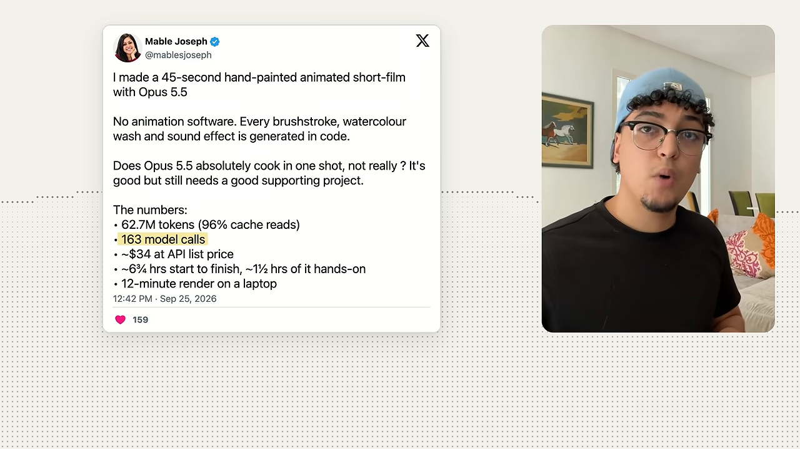
그 결과물의 한 장면이에요. 수채화로 칠한 듯한 보라색 밤, 책상에 엎드려 잠든 아이 옆에서 등불 모양 캐릭터가 노트북을 들여다봐요. 붓 터치와 물감 번짐까지 모두 코드로 만든 거예요.
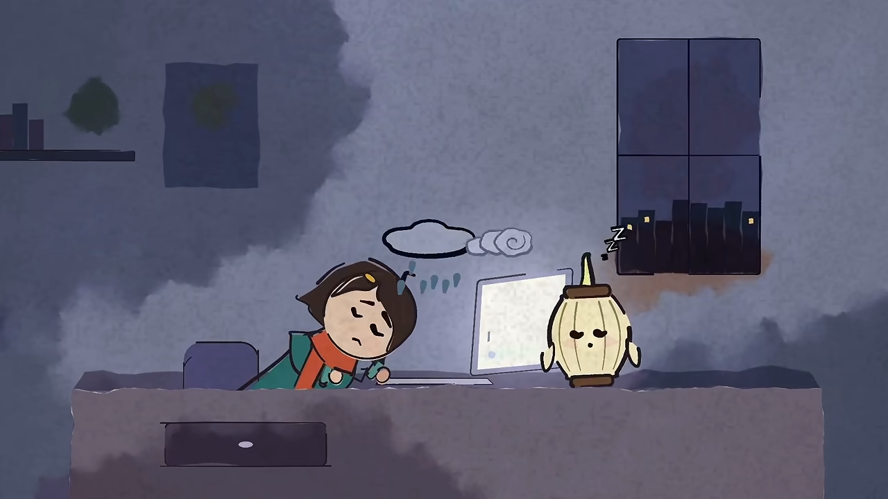
세 영상 비교와 모션 디자이너의 자리
세 영상을 나란히 놓으면 프롬프트에 무엇이 쌓였는지 보여요. 발표자가 정리한 '건너뛰면 안 되는 것'도 이 줄들이에요. 이야기, 단계, 음악, 효과음, 그리고 비평 루프예요.
| 영상 1 | 영상 2 | 영상 3 | |
|---|---|---|---|
| 프롬프트 길이 | 1,397자 | 8,137자 | 9,664자 |
| Claude에게 준 것 | 쇼릴 문장 + 겉모습 지시 | 역할 다섯 개 + 노래 주제 | 역할 여섯 개 + 이야기 |
| 음악 | 없음 | ACE-Step 1.5로 작곡 (12개 버전) | Claude가 작곡 |
| 효과음 | 없음 | 코드로 합성 | 375개 |
| 기본값 금지 | 없음 | 쓴 색·글꼴 금지 목록 | — |
| 자기 비평 | 스냅숏으로 겹침 확인 | 노래 12개를 하나씩 확인 | 샷별 채점 루프, 8점 이상까지 |
| 길이 | 16초, 60fps | 30~40초 요청 | 68.5초, 30fps |
표에서 '—'는 영상이 따로 말하지 않은 칸이에요. 영상 3의 효과음 375개는 도입부에서 밝힌 숫자예요.
목소리와 디스크 공간
세 영상 모두 내레이션은 없어요. 이야기는 화면 글자로 전해요. 목소리를 넣고 싶어도 돈을 낼 필요는 없다고 해요. 아래는 그 예로 든 Kokoro-82M의 Hugging Face 페이지이고, 아래쪽에 'FREE' 라벨이 붙어 있어요. 컴퓨터에서 돌아가는 무료 음성 모델이에요.
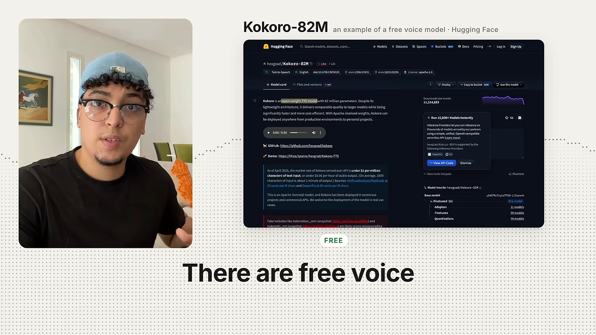
한 가지 주의할 점이 있어요. 음악 모델은 디스크 공간을 꽤 차지해요. 설치하기 전에 여유 공간이 있는지 먼저 확인해야 해요.
모션 디자이너는 끝났을까요?
발표자의 답은 '아니요'예요. 모든 영상에는 정해 주는 사람이 필요했어요. 아래 화면의 세 줄이 사람이 정한 것들이에요. 무슨 이야기인지, 어떤 느낌이어야 하는지, 무엇이 좋고 무엇이 그저 그런지예요.
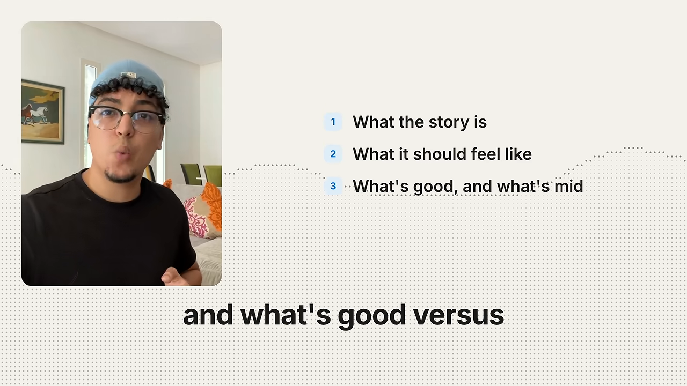
Claude did the work, still I had to direct it.
일은 Claude가 했지만, 연출은 여전히 제가 해야 했어요.
— 영상 14:40
1년 전에는 1,000달러 넘게 주고 맡기던 영상을 이제는 대화 하나로 만들 수 있어요. 발표자는 그 대화를 이끄는 일이 사람의 몫으로 남는다고 봐요.